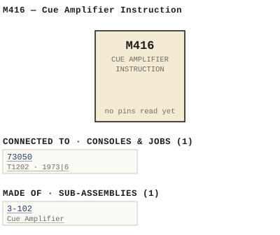

M416 — Cue Amplifier Instruction
| Type | module |
| Category | UNSORTED |
| Try it | simulator & front panel · download package (zip) |
| Earliest dated evidence | 1973|6 — title-block date |
| Evidence | "DATE 20 April 73" in WBS Photos-1-001/Scan_20210323 (2).jpg |
| Confidence | high |
| All years found | 1973|6 |
| Used in jobs | 73050 (1973|6) |
| Folder | DOCUMENTS/RECENT SCANS/WBSps.ca 20210323 - Scans |
| Folder | Modules/UNSORTED/M416 |
Connections
What it is made of and what it is part of.
Pictures


M416.connections.svg 1973 - DOC - 16-03-003 - THICK BLACK PLEXIGLASS TYPE.jpg
1973 - DOC - 16-03-003 - THICK BLACK PLEXIGLASS TYPE.jpg 1973 - DOC - 416-03-003 - THICK BLACK PLEXIGLASS TYPE.jpg
1973 - DOC - 416-03-003 - THICK BLACK PLEXIGLASS TYPE.jpg 1973 - 416-03-002 - ESCUTCHEON - DRN DPS - ISS 1 (2).jpg
1973 - 416-03-002 - ESCUTCHEON - DRN DPS - ISS 1 (2).jpg 1973 - 416-03-002 - ESCUTCHEON - DRN DPS - ISS 1.jpg
1973 - 416-03-002 - ESCUTCHEON - DRN DPS - ISS 1.jpg 1973 - 3-102-06-001 - CUE AMPLIFIER PCB LAYOUT - DRN DGS - ISS 2.jpg
1973 - 3-102-06-001 - CUE AMPLIFIER PCB LAYOUT - DRN DGS - ISS 2.jpg 1973 - 416-02-001 - CUE AMPLIFIER SCHEMATIC - DRN DGS - ISS 1.jpg
1973 - 416-02-001 - CUE AMPLIFIER SCHEMATIC - DRN DGS - ISS 1.jpg 1973 - 416-02-001 - CUE AMPLIFIER SCHEMATIC - DRN DGS - ISS 2.jpg
1973 - 416-02-001 - CUE AMPLIFIER SCHEMATIC - DRN DGS - ISS 2.jpg 1973 - 416-03-003 - SWITCH MOUNTING PLATE - DRN DPS - ISS 1.jpg
1973 - 416-03-003 - SWITCH MOUNTING PLATE - DRN DPS - ISS 1.jpg 1973 - M416 - 1.jpg
1973 - M416 - 1.jpg 1973 - M416 - 10.jpg
1973 - M416 - 10.jpg 1973 - M416 - 2.jpg
1973 - M416 - 2.jpg 1973 - M416 - 3-102-06-001 - CJE AMPLIFIER.jpg
1973 - M416 - 3-102-06-001 - CJE AMPLIFIER.jpg 1973 - M416 - 3-102-06-001 - CUE AMPLIFIER.jpg
1973 - M416 - 3-102-06-001 - CUE AMPLIFIER.jpg 1973 - M416 - 3.jpg
1973 - M416 - 3.jpg 1973 - M416 - 4.jpg
1973 - M416 - 4.jpg 1973 - M416 - 412-02-002.jpg
1973 - M416 - 412-02-002.jpg 1973 - M416 - 412-02-003 - PLACES GIVEN ANGLES.jpg
1973 - M416 - 412-02-003 - PLACES GIVEN ANGLES.jpg 1973 - M416 - 416-02-001 (2).jpg
1973 - M416 - 416-02-001 (2).jpg 1973 - M416 - 416-02-001.jpg
1973 - M416 - 416-02-001.jpg 1973 - M416 - 5.jpg
1973 - M416 - 5.jpg 1973 - M416 - 6.jpg
1973 - M416 - 6.jpg 1973 - M416 - 7.jpg
1973 - M416 - 7.jpg 1973 - M416 - 8.jpg
1973 - M416 - 8.jpg 1973 - M416 - 9.jpg
1973 - M416 - 9.jpg 1973 - M416 - P1.jpg
1973 - M416 - P1.jpg 1973 - M416 - P10.jpg
1973 - M416 - P10.jpg 1973 - M416 - P2.jpg
1973 - M416 - P2.jpg 1973 - M416 - P3.jpg
1973 - M416 - P3.jpg 1973 - M416 - P4.jpg
1973 - M416 - P4.jpg 1973 - M416 - P5.jpg
1973 - M416 - P5.jpg 1973 - M416 - P6.jpg
1973 - M416 - P6.jpg 1973 - M416 - P7.jpg
1973 - M416 - P7.jpg 1973 - M416 - P8.jpg
1973 - M416 - P8.jpg 1973 - M416 - P9.jpg
1973 - M416 - P9.jpg 19xx - DOC - Scan_20210323 (4).jpg
19xx - DOC - Scan_20210323 (4).jpg 19xx - M416 - M416 (2).jpg
19xx - M416 - M416 (2).jpg 19xx - M416 - M416 Cue Amplifier Instruction Manual Index (2).jpg
19xx - M416 - M416 Cue Amplifier Instruction Manual Index (2).jpg 19xx - M416 - M416 Cue Amplifier Instruction Manual Index.jpg
19xx - M416 - M416 Cue Amplifier Instruction Manual Index.jpg 19xx - M416 - M416.jpg
19xx - M416 - M416.jpg 1973 - 73050 - 0002.jpeg
1973 - 73050 - 0002.jpeg 1971 - M415 - 416-06-001 - MNSBEREGEABHES SEHE ANGLES.jpg
1971 - M415 - 416-06-001 - MNSBEREGEABHES SEHE ANGLES.jpgPinout & connections
Dates found in the documents
| Year | Kind | Text | File |
|---|---|---|---|
| 1973|6 | title-block date | DATE 20 April 73 |
1973 - DOC - 16-03-003 - THICK BLACK PLEXIGLASS TYPE.jpg |
| 1973|6 | title-block date | DATE 20 April 73 |
1973 - DOC - 416-03-003 - THICK BLACK PLEXIGLASS TYPE.jpg |
| 1973|6 | title-block date | DATE 20 April 73 |
1973 - 416-03-002 - ESCUTCHEON - DRN DPS - ISS 1 (2).jpg |
| 1973|6 | title-block date | DATE 20 April 73 |
1973 - 416-03-002 - ESCUTCHEON - DRN DPS - ISS 1.jpg |
| 1973|6 | title-block date | DATE 20 April 73 |
1973 - M416 - DOC - 16-03-003 - THICK BLACK PLEXIGLASS TYPE.jpg |
| 1973|6 | title-block date | DATE 20 April 73 |
1973 - M416 - DOC - 416-03-003 - THICK BLACK PLEXIGLASS TYPE.jpg |


Physical manual inventory
| Item | Location | Status | Scanned |
|---|---|---|---|
| WB | Scanned |
Photos & scans (42)


Sub-assemblies & parts used (1)
| Item | What | Family | Year | How we know |
|---|---|---|---|---|
| 3-102 | Cue Amplifier | Sub-assemblies (n-nnn) | 1973|6 | drawing filed with it |
Parts list — board 3-102 (23 parts)
From 1973 - M416 - P8.jpg, page 1 (scanned); also in timelines/data/bom.csv.
| Ref | Part | Value | Manufacturer | Mfr part no. |
|---|---|---|---|---|
| C2 | pEd 10v Ceramic Philips 2222 638 | 6 . 8 | 09688 | |
| C3 | mfd 20V Tantalum Dickson D47GSC 20M | 47 | ||
| C4 | 6.8 pfd 10Ov Ceramic Philips 638 | 2222 | 09688 | |
| C5 | mfd 25V Tantalum Dickson D22GSC 2OM | 22 | ||
| C6 | nfd 25V Tantalum Dickson D22GSC 20M | 22 | ||
| C7 | mfd 25V Tantalum | 22 | ||
| C8 | mfd | 22 | 25V Tantalum | |
| C9 | mfd 25 V Tantalum DLOOGSc 20M | 100 | ||
| C13 | mfd 35V Siemens EB | 220 | 220/35 | |
| C14 | mfd 15V EB | 1000 | 1000/15 | |
| C15 | mfd 50V AEC | 0 .22 | CQ92-MC-50-224M | |
| CR2 | Diode | |||
| CR3 | Diode | |||
| CR4 | Diode | |||
| CR6 | Diode Fairchild | 1N9l4 | ||
| CR7 | Diode Motorola | 1n4003 | ||
| Q1 | NPN Transistor Fairchild | 2N3569 | ||
| Q2 | NPN Transistor | |||
| Q3 | NPN Transistor | |||
| Q4 | PNP Transistor Texas Inst. | TIP3OB | ||
| Q5 | PNP Transistor Fairchild | 2N3645 | ||
| C10 | pfd 100v Ceramic Philips 2222 638 | 6 . 8 | 09688 | |
| C12 | pfd 10ov Ceramic | 100 |
Consoles & jobs it is connected to (1)
Their own drawings name this module.
| Job | Year | Drawing | Page |
|---|---|---|---|
| 73050 | 1973|6 | 1973 - 73050 - 0002.jpeg | 1 |
Named in other drawings & documents (1)
| File | Page |
|---|---|
| 19xx - RTO-144 - Module RTO-144 Jumper calculator.xlsx | 1 |
From the manuals
Each manual split into its sections. Text that is the same in many Ward-Beck manuals (warranty, address, standard notes) is kept once on the Boilerplate page and linked.
Specifications (1)
Technical Data — 103 words · 1973 - M416 - P3.jpg, page 1
Gain: 45 dB (front panel level control provided) Frequency Response: within dB 50Hz to 10kIz . Noise: 75 dB below watts_ Total Harmonic Distortion: Less than 0 . 5% at lkHz at 3watts Output level Source Impedence: 600 ohms or less balanced or unbalanced . Input Impedenace: 20 K ohns Input Level -10 dBm for watts out +18dBm max Load Impedence: ohms Output Impedence: Less than 0.5 ohms Output Level: watts max Power Requirements: 25 to 36v dc unregulated 20 mA idling current 300 mA at full power output_ Ambient Temperature: Oc to 60"c Dimensions: 1.58w X 6.25L X 6D Weight: 75 lbs
- source: 1973 - M416 - P3.jpg, p. 1
Circuit description (2)
Circuit Description — 245 words · 1973 - M416 - P4.jpg, page 1
The M416 watt cue amplifier provides three 20K ohm bridging inputs each of Ihich is isolated from one another In addition, sun input is provided which is intended to receive the cue feeds from the M441 input modules 21 and 22 form an actively balanced input which provides the necessary longitudional balance characteristics The input amplifier is capable of handling an input level up to +l8dBm without over load The amplifier level control is located after the preamplifier _ This control may be extended via pins and 8 to permit the adjustment of the amplifier output level up to distance of 10 feet This external control operates in series with the control located on the module For this external control type of operation , the module level control should remain in the full clockwise position.
23 forms the driver amplifier for the output power transistor 03 through Q6 _ The output signal is coupled through to pin S _ CR3 to CR6 form the overdrive protection circuit to prevent excessive power dissipation if the amplifier is inadvertently shorted while signal i5 present 01 and Q2 form regulator circuit which provides the bias voltage (approximately 10V to pin of z1 , 22 and 23) The amplifier will operate from nominal 24 to 36 V dc unregulated supply which has the negative side on the common terminal The unregulated dc voltage i5 applied to pin X and fed through fuse Fl and polarity reversing protection diode CRI
- source: 1973 - M416 - P4.jpg, p. 1
Circuit Description — 242 words · 1973 - M416 - 4.jpg, page 1
The M416 watt cue amplifier provides three 2OK ohm bridging inputs each of which is isolated from one another In addition, sum input is provided which is intended to receive the cue feeds from the M441 input modules z1 and 22 form an actively balanced input which provides the necessary longitudional balance characteristics The input amplifier is capable of handling an input level up to +l8dBm without over load .
The amplifier level control is located after the preamplifier. This control may be extended via pins and 8 to permit the adjustment of the amplifier output level up to distance of 10 feet This external control operates in series with the control located on the module For this external control type 0f operation, the module level control should remain in the full clockwise position.
23 forms the driver amplifier for the output power transistor 03 through Q6 _ The output signal is coupled through C to pin S CR3 to CR6 form the overdrive protection circuit to prevent excessive power dissipation if the amplifier is inadvertently shorted while signal is present 01 and Q2 form regulator circuit which provides the bias voltage (approximately 10V to pin of Z1, 22 and 23) The amplifier will operate from nominal 24 to 36 dc unregulated supply which has the negative side on the common terminal The unregulated dc voltage is applied to pin X and fed through fuse Fl and polarity reversing protection diode CRI
- source: 1973 - M416 - 4.jpg, p. 1
Maintenance & alignment (2)
Test Procedure — 102 words · 1973 - M416 - 6.jpg, page 1
Slowly apply Power and note idling current with no signal applied. This should nominally be 20 to 25 Il 2 check dc voltage at pin should be 12 volts. 0f z1 to 23 _ This voltage 3 , Apply signal and check for maximum gain (45dB) Confirn that the amplifier meets specifications: Gain Frequency Response Noise Distortion 5 The signal to noise ratio should decrease to approximately 85 dB with level control full counter clockwise.
At 3 watts oueput the supply current is 300 ma Shorting the amplifier output with signal present , the supply current wili rise Wo approximately 860 ma
- source: 1973 - M416 - 6.jpg, p. 1
Test Procedure — 103 words · 1973 - M416 - P6.jpg, page 1
Slowly apply power and note idling current with no signal applied. This should nominally be 20 to 25 mA 2 check dc voltage at pin should be 12 volts . of 21 to 23_ This voltage 3 Apply signal and check for maximum gain (45dB) 4 Confirm that the amplifier meets specifications: Gain Frequency Response Noise Distortion 5 The signal to noise ratio should decrease to approximately 85 dB with level control full counter clockwise 6 At 3 watts output the supply current is 300 ma Shorting the amplifier output with signal present , the supply current will rise Wo approximately 860 mA
- source: 1973 - M416 - P6.jpg, p. 1
Parts list (text) (2)
Parts List — 184 words · 1973 - M416 - 8.jpg, page 1
SIBOL DESCRIPTIOL MFG PART_NUMBER Cl C2 C3 C4 C5 47 mfd 20v Tantalun 6 . 8 pfd 10ov Ceramic 47 mfd 20v7 Tantalum 6.8 pfd 10ov Ceramic 22 mfd 25V7 Tantalun Dickson Philips Dickson Philips Dickson D47CSC 2OM 2222 638 09688 D47CSC 2OM 2222 638 09688 D22GSC 20M C6 C7 C3 C9 C10 22 nfd 25V7 Tantalum 22 nfd 25V Tantalun 22 mfd 25v7 Tantalum 100 mfd 25 Tantalum 6 .
8 pfd 100v Ceramic Dickson D22GSC 20M DLOOGSC 20M 2222 638 09688 Philips cl1 C12 C13 C14 C15 100 pfc 10OV Ceramic 100 pfd 10ov Ceramic 220 mfd 35v7 1000 mfa 15V 0 . 22 mfd Sov Philips 2222 638 70101 Siemens EB 220/35 EB 1000/15 cQ92-MC-50-224M AEC CRI CR2 CR3 C?4 CRS Diode Diode Diode Diode Diode Fairchild 1N914 CRG CR7 Diode Diode Fairchild 1N914 Motorola 1N4003 01 02 03 04 05 NPN Transistor NPN Transistor NPN Transistor PNP Transistor PNP Transistor Fairchild 2N3569 Texas Inst TIP3OB Fairchild 213645 06 NPN Transistor Texas Inst TIP 29B 21 22 23 Integrated circuit Integrated circuit Integrated Circuit National LM 301 LM 301 LM 301
- source: 1973 - M416 - 8.jpg, p. 1
Parts List — 34 words · 1973 - M416 - 7.jpg, page 1
SYMBOL DESCRIROX MFG PART NUMBER R12 SK 169 Pozen-ioneter PEC RA5021 528 SK Knob Rogan RBl-SK7-1/4 Fuse Rolder Littelfuse 3400204 Fuse 0575 A5p 312 750 Prizted Cizcuit Board WBS 3-102 Heaz Sic B 416-03-001
- source: 1973 - M416 - 7.jpg, p. 1
Drawings (19)
Each scan with its trace laid over it: the slider runs from the scan to the vector drawing. Click one to see it large and save it as SVG, DXF, KiCad, PDF or PowerPoint.
1973 - M416 - 412-02-002viewer
Places Given Anglesviewer
1973 - M416 - 416-02-001 (2)viewer
1973 - M416 - 416-02-001viewer
M416 / CUE AMPLIFIER / SCHEMATICviewer
M416 / CUE AMPLIFIER / SCHEMATICviewer
Compressor Ccnponent Layoutviewer
Cje Amplifierviewer
Cue Amplifierviewer
M416 / CUE AMPLIFIER PCB / LAYOUTviewer
Thick Black Plexiglass Typeviewer
Thick Black Plexiglass Typeviewer
M416 / ESCUTCHEONviewer
M416 / ESCUTCHEONviewer
SWITCH MOUNTING PLATEviewer
M416viewer
M416 Cue Amplifier Instruction Manual Indexviewer
M416 Cue Amplifier Instruction Manual Indexviewer
M416viewer
Read from the drawing title blocks.
| Drawing | Title | Date | Drawn by | Checked by | Iss. | Source |
|---|---|---|---|---|---|---|
| 416-06-001 | Mnsberegeabhes Sehe Angles | 1971|4 | GP | file | ||
| 16-03-003 | Thick Black Plexiglass Type | 1973|6 | DP | file | ||
| 3-102-06-001 | Cue Amplifier | 1973|6 | DGS | 2 | file | |
| 416-03-003 | Thick Black Plexiglass Type | 1973|6 | DPS | 1 | file | |
| B 3-102-06-001 | M416 / CUE AMPLIFIER PCB / LAYOUT | 1973|6 | DGS | DPS | 2 | file |
| B 416-02-001 | M416 / CUE AMPLIFIER / SCHEMATIC | 1973|6 | DGS | 2 | file | |
| B 416-02-001 | M416 / CUE AMPLIFIER / SCHEMATIC | 1973|6 | DGS | RB (Rodger Beck) | 1 | file |
| B 416-03-002 | M416 / ESCUTCHEON | 1973|6 | DPS | AF | 1 | file |
| B 416-03-002/2 | M416 / ESCUTCHEON | 1973|6 | DPS | 1 | file | |
| B 416-03-003 | SWITCH MOUNTING PLATE | 1973|6 | DPS | 1 | file | |
| — | M416 | file | ||||
| — | M416 Cue Amplifier Instruction Manual Index | file | ||||
| — | M416 | file | ||||
| — | M416 Cue Amplifier Instruction Manual Index | file | ||||
| 3-102-06-001 | Cje Amplifier | 3 | file | |||
| 412-02-002 | file | |||||
| 412-02-003 | Places Given Angles | GEB (Gerry E. Bell) | file | |||
| 416-02-001 | file | |||||
| 416-02-001 | file |